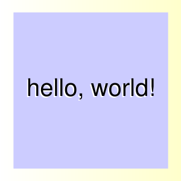

A Ruby module to generate simple graphics using Google's online plotting service.
Introduction
roogle_graphics is a Ruby module that makes it very easy to generate simple PNG images containing text and polygons. It does this by compiling your graphic commands into a URI and sending it to the Google Chart online service for rendering.
The main advantage of this approach is that it requires no external libraries or packages. It will work from any environment that can issue an HTML GET request.
The main disadvantage is that we're asking the Google Chart API to do something it really wasn't designed to do, so you don't have total control over things like font style. But even so, roogle_graphics can generate useful and good looking graphics, like this:
simple example
To use roogle_graphics, the basic steps are:
-
Instantiate a Plot object
-
Create Text and Shape elements, calling Plot#add_element() on each one to add it to the plot.
-
Call Plot#generate_uri (or Plot#generate_img_uri) and submit the resulting string to the Google Chart web service.
-
Display the resulting .png
For example:
require 'roogle_graphics' include RoogleGraphics def hello_world plot_width = 300 plot_height = 300 x0 = plot_width/2 y0 = plot_height/2 # set up a plot with a lemony gradient background plot = Plot.new(:width => plot_width, :height => plot_height, :fill_color2 => 'ffffcc') # add a pale blue box, centered at the middle of the plot box = [[-130,-130],[130,-130],[130,130],[-130,130],[-130,-130]] shape = Shape.new(x0, y0, box, :fill_color => 'ccccff') plot.add_element(shape) # add text with cheap embossed effect msg = "hello, world!" text = Text.new(x0+2, y0-2, msg, :color => 'ffffff', :size => 40, :halign => :center, :valign => :middle) plot.add_element(text) text = Text.new(x0, y0, msg, :size => 40, :halign => :center, :valign => :middle) plot.add_element(text) # generate the URI that, when passed to Google, will produce the plot plot.generate_uri end
This generates the rather fearsome URI of:
http://chart.apis.google.com/chart?cht=lxy&chs=300x300&chxt=x,y&chxs=0,000000,0,0,_|1,000000,0,0,_&chco=ffffff00&chd=t:6.7,93.3,93.3,6.7,6.7|6.7,6.7,93.3,93.3,6.7&chm=B,ccccff,0,0,0|@thello%5C%2C+world%21,ffffff,0,0.493:0.493,40,0,hv|@thello%5C%2C+world%21,000000,0,0.500:0.500,40,0,hv&chf=bg,lg,0,ffffff,0,ffffcc,1
which, passed to Google's charting service will produce a png file that looks like this:

See ../roogle_graphic_examples.rb for additional examples.
Notes (and limitations)
We are severely subverting Googles's graphing services API when we use it to plot simple polygons and shapes -- it was originally designed to make good looking quantitative graphs (a job it does very well). So it is not surprising that there are several limitations:
-
URLs are limited to 2K in length. If your plot gets too complicated,
consider using a POST as described in code.google.com/apis/chart/docs/post_requests.html (TODO: write a Plot#generate_form method that outputs a POSTable form.)
-
You cannot control the font, or font weight.
-
You cannot control the weight of a Shape's outline.
-
Be nice to Google. Don't try to generate real-time animations using roogle_graphics.
-
For more information, see code.google.com/apis/chart/docs/making_charts.html
-
Want to know how this really works? See code.google.com/apis/chart/docs/chart_params.html
Want to help?
You know the drill: fork the repository, work your magic, let me know when I should merge yours back in.
Share and enjoy!